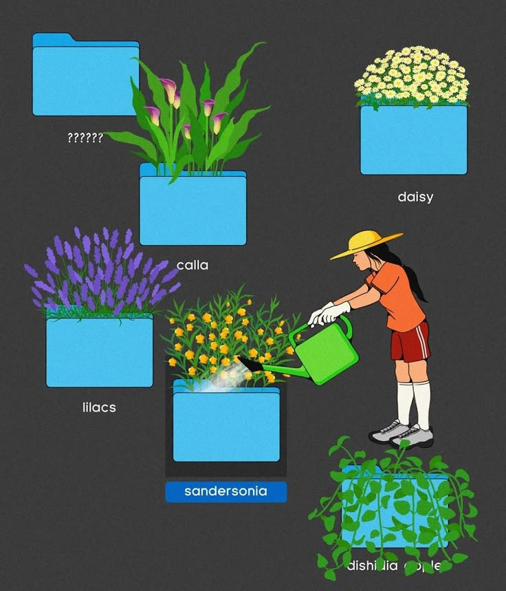

11
Folder planters
Light-blue desktop folders on charcoal used as planters, each holding a different flower (calla, daisy, lilac, sandersonia, trailing dischidia), labelled in small sans; one empty folder labelled "??????"; a woman in a sun hat waters one folder from a green can.
Files as something tended, not stored. The empty "??????" folder is the best joke on the board: the thing you haven't started. Labels as plant names. Source of our planter opening.
Pinterest title: Choi Haeryung (@teummmm) · Instagram 照片和视频